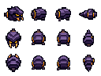

30 Körpersegmente · Spielmaßstab
Kopf, 30 Körpersegmente und Schwanz. Die Teile folgen derselben Wegspur; verlorene Segmente brechen am hinteren Ende ab. Lebenspunkte hier nur zur Vorführung.
So klein ist er tatsächlich
1× Spieleinheiten · vorhandene Gegner unverändert skaliert
Pixelansichten vergrößert

Die große Tafel zeigt die einzelnen Bauteile. Der Wurm wird daraus zusammengesetzt. Die laufende Vorschau oben verwendet denselben Maßstab 0,83 wie die Vergleichsgegner.